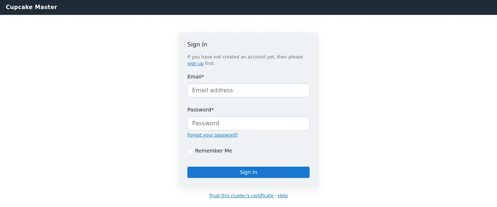
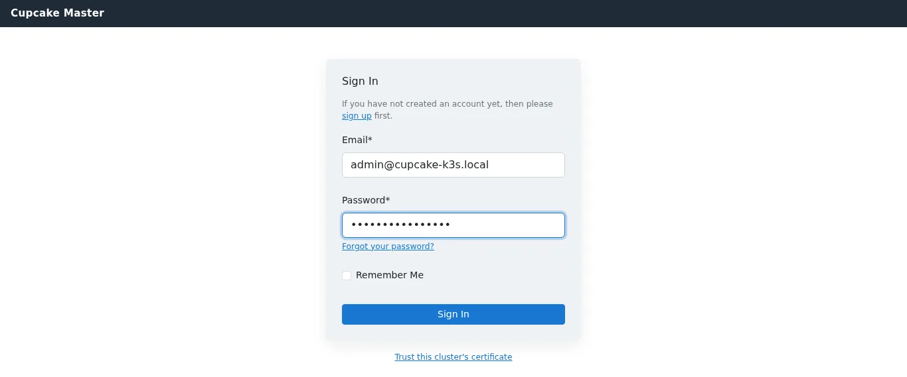
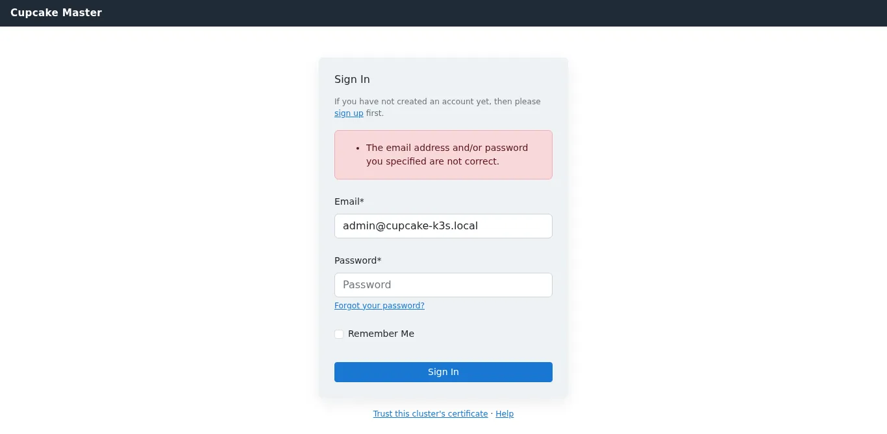
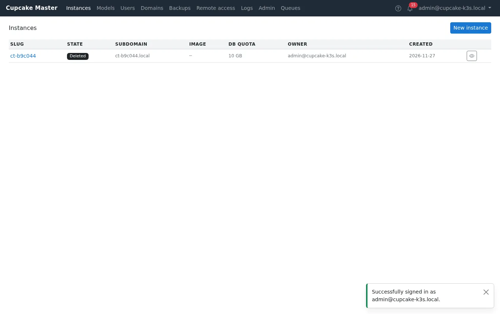
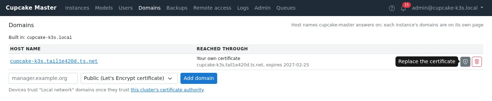
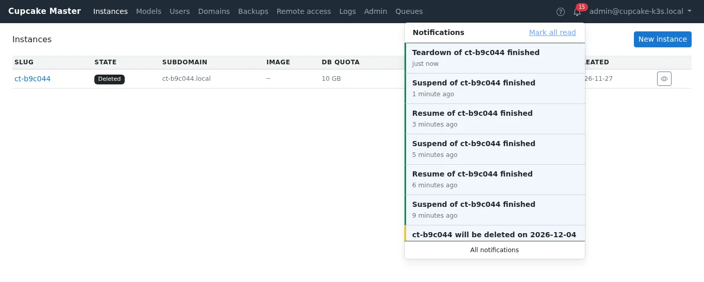
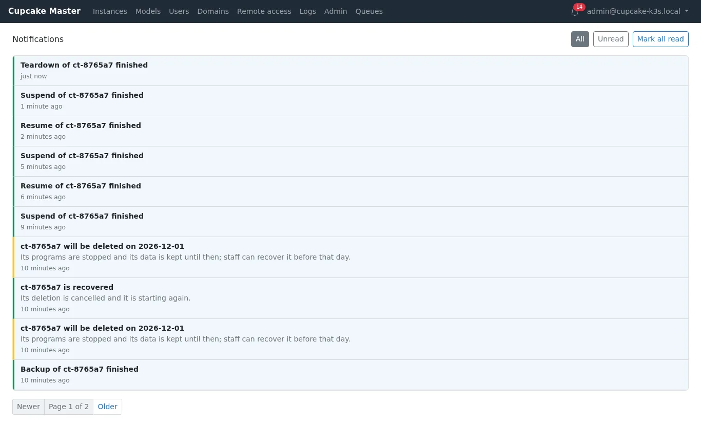
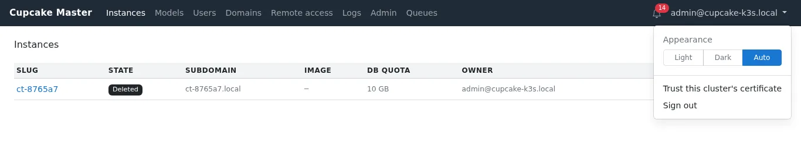
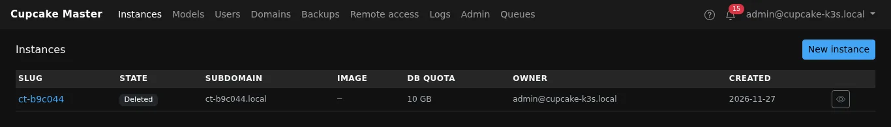

cupcake-master creates and looks after Cupcake instances on a Kubernetes cluster, such as a set of Raspberry Pis. Each instance is a separate Cupcake with its own database, files and address.
Signing in
Open cupcake-master's address in a browser, for example https://cupcake-k3s.local, and sign in with your email
address and password. On a Pi cluster, the first admin login is in cupcake-k3s-credentials.txt on the control
plane's boot partition.


A wrong email address or password is refused:

After signing in you see your instances:

Around the screen
The top menu leads to every page. Staff see Models, Users, Domains, Backups, Remote access and Logs as well.
Icon buttons name their action when the pointer rests on them:

Notifications
The bell shows what cupcake-master has to tell you, such as a finished or failed task, an instance over its quota or a certificate about to expire. Unread ones are counted on the bell.

All of them are on the Notifications page:

Appearance
The account menu chooses a light, dark or automatic appearance, and signs you out. Automatic follows your computer.

